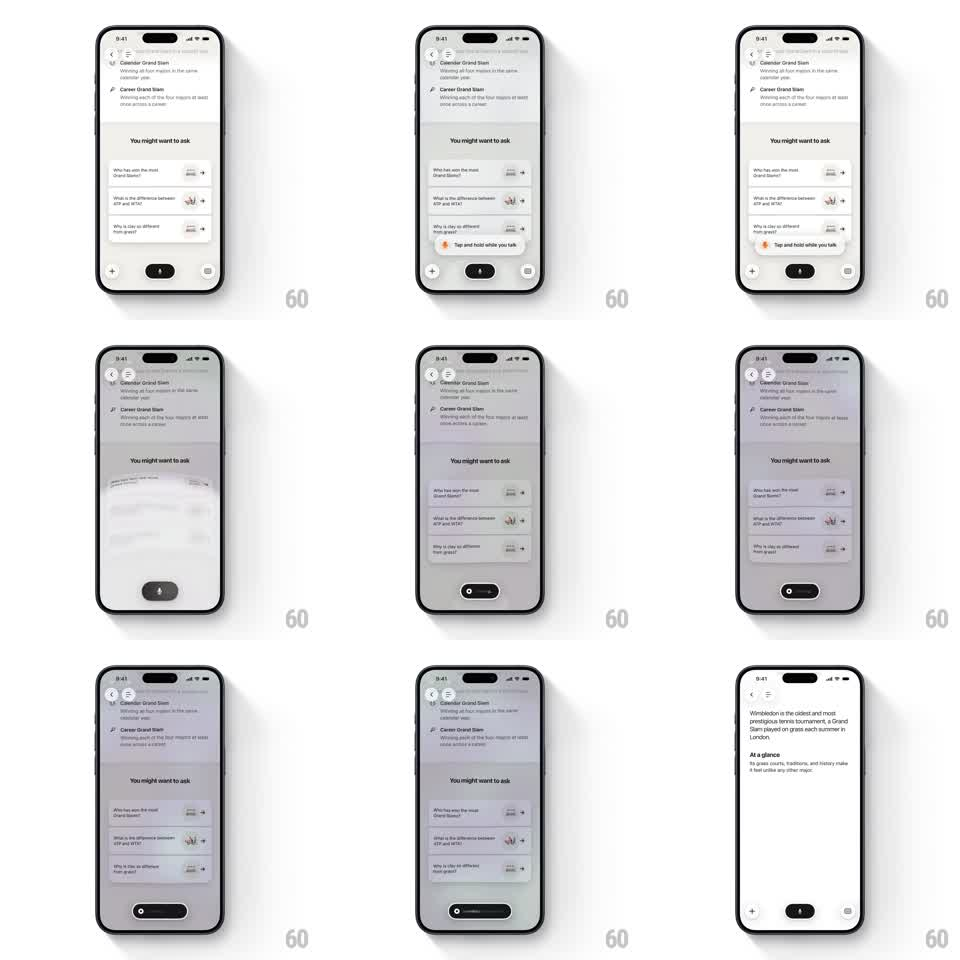

Media
Frame-by-frame

Rebuild this interaction 1:1: Monogram's hold-to-talk mic - pressing and holding the bottom-bar mic pill triggers a full-screen liquid blur wash that settles into a focused dark mic pill, and on release the bar morphs into a thin progress strip while the answer content fades into view.

Rebuild this interaction 1:1: Monogram's hold-to-talk mic - pressing and holding the bottom-bar mic pill triggers a full-screen liquid blur wash that settles into a focused dark mic pill, and on release the bar morphs into a thin progress strip while the answer content fades into view.
## Integration
Integration: stack-agnostic spec - springs given as stiffness/damping, timed motions as duration + curve; map every value to your framework and animation library of choice.
## Scene
AI chat screen: header Q&A list, "You might want to ask" suggestion section with 3 rows, and a bottom bar with + button, central dark pill (mic icon), and grid button. A hint pill ("Tap and hold while you talk") sits just above the bar before first use.
## Motion spec
Pattern: hold-to-talk morph - blur pulse covers the screen, then the bar re-forms into a focused mic state; release resolves into a content reveal.
- On touch-down, the hint pill fades out (150ms) and a frosted liquid blur layer scales up from the bottom bar (scale 0.6 -> 1, 300ms, ease-out), washing the whole screen behind a soft white-violet blur.
- The bottom bar collapses into a single dark mic pill (width shrinks ~180px -> 64px, 250ms, spring ~300/24); + and grid buttons fade out (200ms).
- While held, the blur gently breathes (blur radius oscillates +/- 10% at ~1Hz).
- On release, the blur clears (250ms ease-in-out), the pill stretches into a thin dark progress strip (height 48 -> 4px, 300ms), and the response content fades/slides in from 16px below (350ms, ease-out).
- One-shot per hold; the screen returns to the idle bar after the answer renders.
## Calibration
- The blur is the star: it must feel like liquid spreading from the mic, not a plain dim overlay.
- Keep the mic pill visible on top of the blur at all times so the user never loses the hold target.
## Reduced motion
Crossfade the list to a dimmed state (150ms), swap the bar for the mic pill without scale motion; release crossfades to the answer (200ms).
## Don't miss
- The blur wash originates from the bottom bar, not screen center.
- The hint pill ("Tap and hold while you talk") only exists before the first hold.